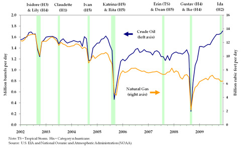
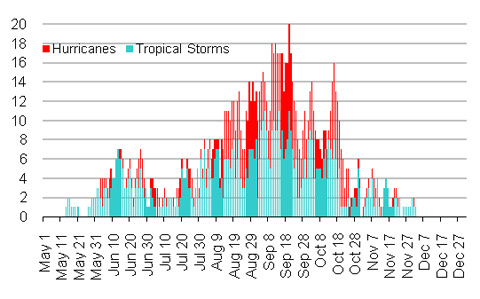

Offshore platform and rig operators in the Gulf of Mexico temporarily evacuate personnel and shut in crude oil and natural gas production to protect facilities when severe weather threatens. Such events have sometimes had substantial impacts on energy production (see Figure 1), yet most tropical storms and many hurricanes that pass through the Gulf cause only minor disruptions for just a few days. For example, Hurricane Ida, a Category 2 storm, caused about 20-30 percent of normal daily energy production to be shut in over a three day period in November of 2009.
Figure 1. Crude Oil and Natural Gas Production Federal Offshore Gulf of Mexico,
2002-2009
 |
|
Production outages become significant when large-scale tropical weather systems require production to be shut in for longer periods or when damage occurs to offshore infrastructure. Hurricanes Katrina and Rita, which passed through the Gulf in late-August and September of 2005, were the most disruptive storms to impact offshore energy production and caused long-lasting damage including the destruction of 113 offshore platforms. At one point just before Hurricane Rita made landfall, 100 percent of crude oil production and about 80 percent of natural gas production was shut in for five consecutive days. Production outages continued for months afterwards. Even as late as June of 2006, 10 to 12 percent of crude oil and natural gas production remained shut-in.
Severe tropical weather occurs when the ocean temperature warms during the summer months. Over the past 100 years, tropical storms have formed within the Gulf of Mexico as early as May and as late as December (see Figure 2). Hurricanes, which usually cause the most significant disruptions to offshore production, occur most frequently during the months of August and September.
Figure 2. Frequency of Gulf of Mexico Hurricanes and Tropical Storms,
1910-2009
 |


{kind=link}